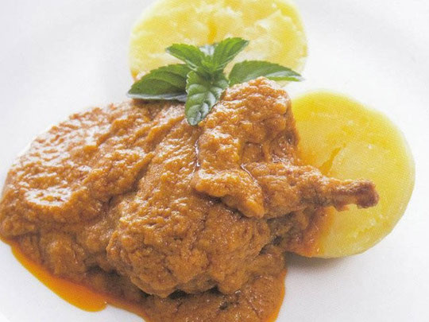
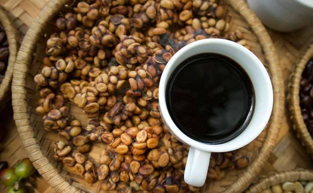

Platos fuertes
Chapulines Apache

En México, son consumidos principalmente en el estado de Oaxaca y en centro y sur del país.
15.95 $
Cuy Bit
En la sierra ecuatoriana, se acostumbra a comer cuy asado y es un plato típico en las festividades del país.
21.40 $
Kopi Luwak
Es uno de los cócteles más conocidos, compuesto de ginebra con una porción de vermut...
8.75 $
Fugu

El fugu, es un pescado de lujo usado como ingrediente que se consume durante todo el año en Japón.
58.00 $
Huevos Cenetenarios

Es un plato delicioso de la región China y también son conocidos como huevos de dragón o huevos de los mil años.
10.99 $